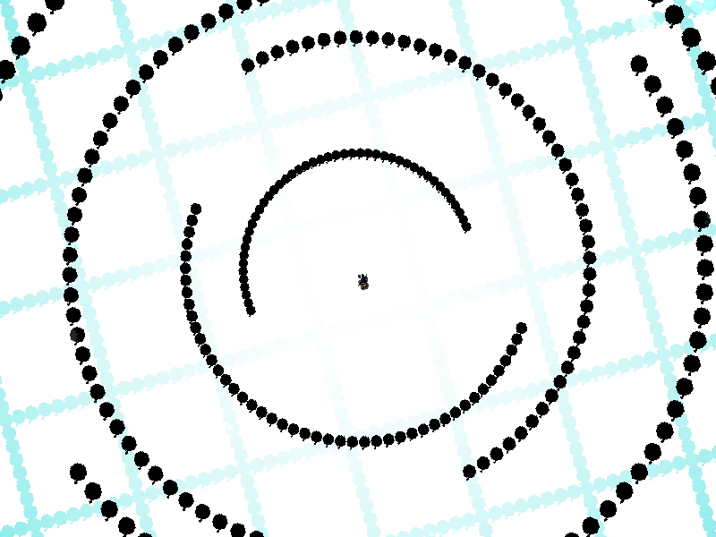
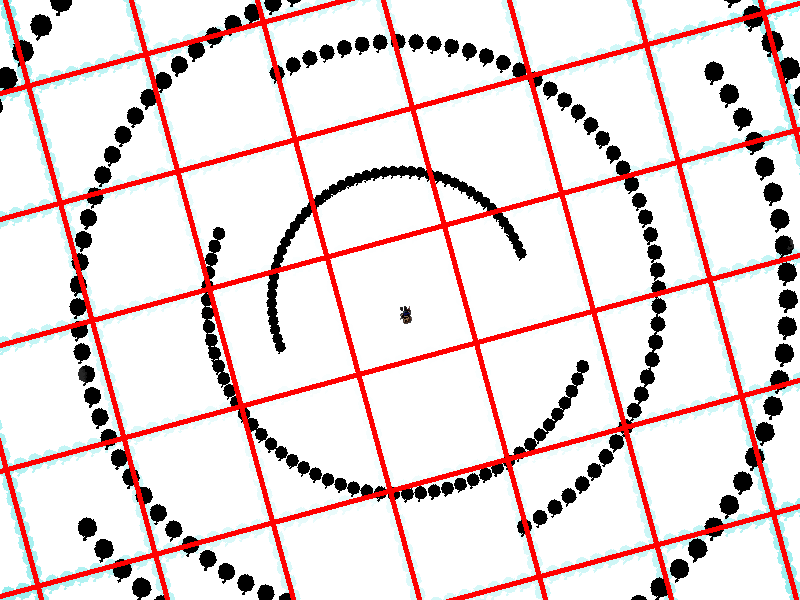
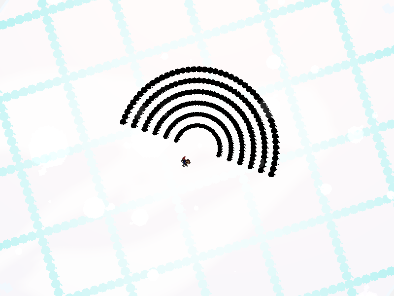

| creator | segment | label | jump |
|---|---|---|---|
| NN | 1:50.10~1:51.50 | R/Q | infinite |
角度と回転方向がランダムな弾幕です。
原理自体は4-7と同様ですが、1:50.10~1:51.10において格子状弾幕が存在している（fig.8-6.1）ことにより回避に利用できる空間が狭まっているという点において差異が存在します。

なお、1:51.10で半円状弾幕が一定の角度に収束した時点（fig.8-6.2）で、格子状弾幕を構成する弾のうち特定の条件をみたすものについては当たり判定がなくなります。

また、回転方向については必ず4-7と逆向きになります。